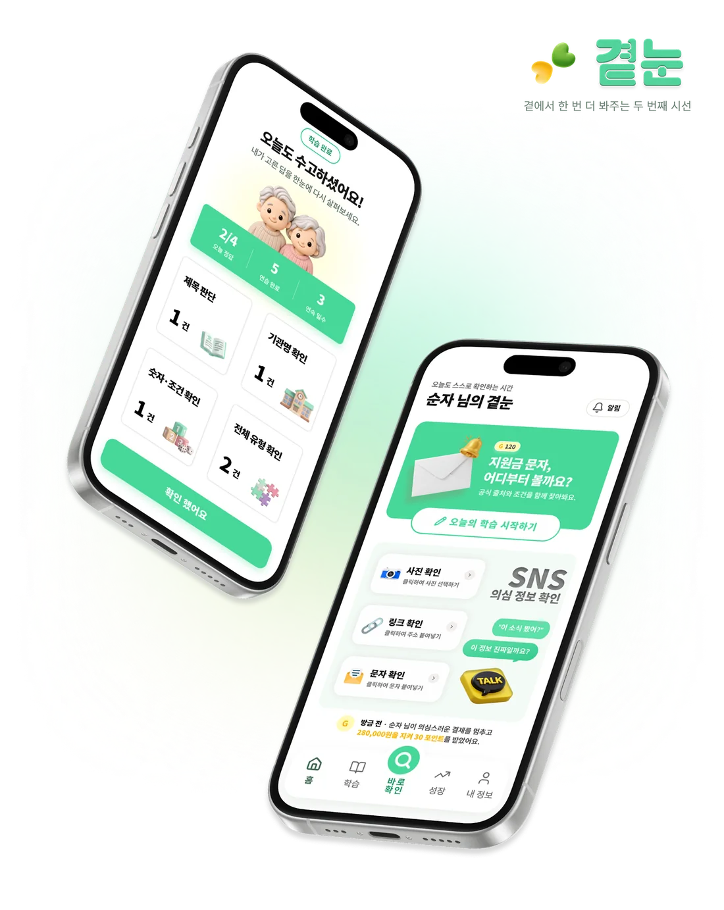
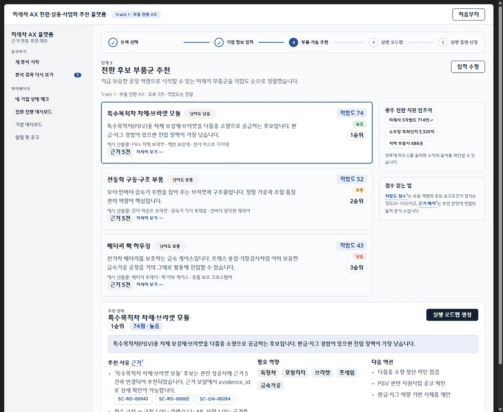
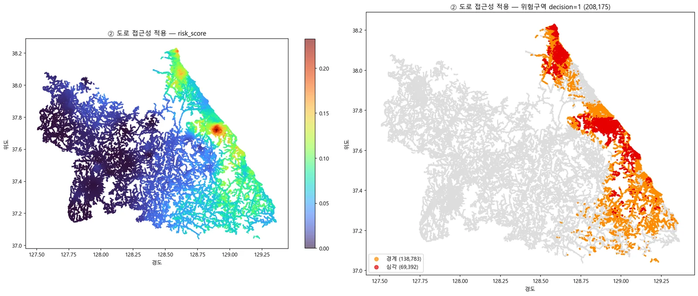
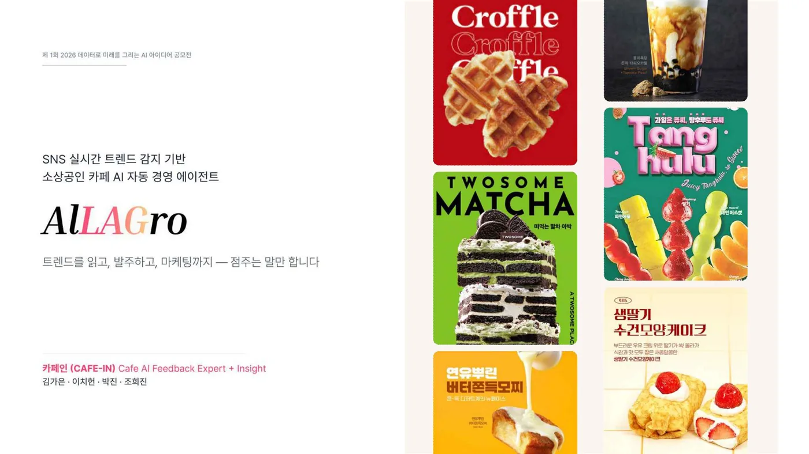

AI와 함께 데이터를 다루는
개발자, 박진입니다.
문제와 지표는 직접 정하고, 데이터 분석과 백엔드 구현은 AI 코딩 도구와 함께 빠르게 만듭니다. 결과는 직접 검증하고, 예상과 다르면 원인을 찾아 다음 버전에 반영합니다.
- 전공
- Computer Statistics
- 교육
- LG DX School 5기
- 자격
- ADsP 데이터분석 준전문가
데이터에서 문제를 찾고,
근거가 보이는 서비스로 만듭니다.
문제와 지표는 직접 정하고, 데이터 분석과 백엔드 구현은 AI 코딩 도구와 함께 빠르게 만듭니다. 결과는 직접 검증하고, 예상과 다르면 원인을 찾아 다음 버전에 반영합니다.
park@jin ~ %
Python · FastAPI · PostgreSQL · AWS · Git
상태머신, 인증, SSE 이벤트 스트림, 외부 API 연동과 AWS 배포
Pandas · NumPy · scikit-learn · R · RAG
데이터 수집·전처리, NLP 분석, 임베딩 검색과 평가
ChatGPT · Claude Code · Codex
구현은 AI와 함께, 설계·검증·운영 판단은 직접 합니다
park@jin ~ %

KDT 해커톤 · 아이디어상
60대가 받은 정보에 공식 근거와 확인 질문을 붙이는 정보판단 AI 코치. 문제 정의, 데이터 기반, 지표와 최종 기획서를 총괄했습니다.

미래차 AX 공모전
11종 공공데이터와 LightGBM 랭킹 모델을 연결한 근거 기반 추천 API. 1차 MVP를 대체할 2차 백엔드를 직접 구현했습니다.

날씨 빅데이터 콘테스트
강원 전주 138만 개와 기상·지형·산림 데이터를 결합해 「발화원 × 연소조건」 위험 모델을 설계했습니다.

AI 아이디어 공모전 · 우수상
SNS 트렌드를 감지하는 데서 끝나지 않고, 자동 발주·마케팅 문구·레시피 개선까지 실행하는 카페 소상공인용 AI 에이전트를 제안했습니다. 아이디어 디벨롭과 발표자료를 함께 만들었습니다.